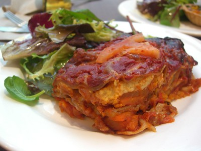

Odin’s Lasagne

"Spelt Lasagne with Vegetables - Macro, Glen Waverley" by avlxyz is licensed under CC BY-SA 2.0 

 .
.
Recipe Details
- ⏲️ Prep time: 1 hour
- 🍳 Cook time: 45 min
- 🍽️ Servings: 6
Description
Lasagne is always a fan favourite with the other Aesir, and one tha Odin is absolutely proud of. Having travelled the world for the perfect balance to the ingredients, the All Father presents his own rendition of a modern-traditional lasagne.
If you’re a fan of big flavours and hearty comfort food cookec in your very own home, you should definitely give the big guy’s lasagne a try!
Ingredients
- Parmesan cheese
- Emental cheese (optional)
- Dry mozarella cheese
- Fresh Bolognese sauce or about 1 litre worth of store-bought sauce
- Béchamel sauce or ricotta lasagne filling
- Lasagne pasta sheets
Steps
- Prepeare the bolognese or jar of pasta sauce.
- When the sauce is almost done cooking prepare your béchamel or ricotta filling.
- If you want, you can add 3-4 handfuls of grated emental cheese to the béchamel.
- If necessary, boil the lasagne sheets following the instructions on the packaging, start preheating your oven to 175oC/350oF.
- Spread a thin layer of pasta sauce; if you want you can finely grate a little bit of parmesan on each layer of bolognese.
- Cover with lasagne sheets and spread a layer of béchamel sauce or ricotta, cover with lasagne sheets and spread a layer of pasta sauce; if you want you can finely grate a little bit of parmesan on each layer of bolognese.
- Rinse and repeat the previous step until the tray is nearly full or you are rinning low on béchamel sauce/ricotta filling, take care that the last layer should be béchamel or ricotta.
- Grate some parmesan on top of your final layer and cover with Dry mozzarella cheese, wrap the top in aluminium foil.
- Place the tray in the centre of you pre-heated oven and let it cook for 30-35 minutes, after that remove the foil to let the top brown.
- Once it is done cooking take it out of the oven and cover again with aluminium foil, let it rest for 10 minutes before serving.